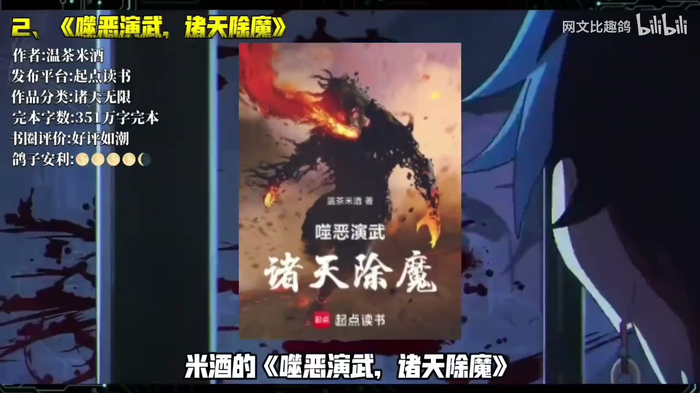

原视频 · 在线回看
点击后联网加载 B 站播放器；本地不下载整段视频。

原视频 · 在线回看
点击后联网加载 B 站播放器；本地不下载整段视频。
来源：10月网文完结潮！锐评网文红黑榜~还有哪些佳作值得一看？！【月度书单010】
UP 主：网文比趣鸽 时长：14 分 15 秒 链接：https://www.bilibili.com/video/BV1qoht6dExu/ 阅读强度：quick
一部网文写到几百万字并顺利完结，读起来就一定过瘾吗？这份十月书单的评价标准更具体：设定能否持续产生新看点，开篇成长是否够清楚，长篇后期能不能稳住节奏，最后是否把故事收好。下面几部书的差别，正好展示了这些判断怎样影响“值得追”这件事。
《苟在两界修仙》约 234 万字完结。主角在两个修真世界间穿梭：一边资源枯竭、修士强悍，另一边宗门众多、灵物丰富。两界资源落差让他能互补所需，隐藏身份、积攒实力，延续“苟道”路线。书单喜欢它把熟悉的修仙设定重新拼接后用在主角成长上，整体风格也稳定；后段转向家族经营时新鲜感下降，剧情力度不如前作。它适合喜欢谨慎发育和资源经营的读者，追长篇时要留意自己是否还对后期路线感兴趣。
温茶米酒的《噬恶演武，诸天除魔》约 351 万字完结。主角楚天书从小受邪祟困扰，得到祖辈留下的令牌后穿梭不同世界；斩杀邪灵还能收集素材、反推新武学。现代都市之外，副本横跨民国、大唐、明朝与废土，打斗和江湖气是主要看点。这本书的另一项长处是作者稳定更新、能把长篇写完。不过，前作《无限辉煌图卷》花了整卷铺垫，楚天书早期战力变化也不够直观。喜欢慢热、愿意等主角逐渐显出成长的读者更容易读进去，期待开篇快速升级的人可能会被劝退。
《卷宗学者的百科全书》约 140 多万字完结，走的是 DND 风格的队伍冒险。主角伊莱塔勒斯以卷宗学者身份旅行，整理不同神祇的神术，也在魔法笔记里记录地理、怪物习性和风物；这些记录能帮助他利用地形作战、理解遇到的生物。故事从护卫任务逐渐走到国家战争和神明博弈，队友各有性格，世界设定有厚度。书单喜欢它的公路冒险与“知识也能成为武器”的设计，但觉得前期铺垫很多、实际冒险内容偏少；想看队伍逐渐卷入大局的读者可以试读。
《从水猴子开始成神》约 480 万字完结。渔家孤儿梁渠得到水泽之鼎，从炼化水猴子天赋起步，逐渐收服水兽、积累水泽灵物并提升能力。陆地资源稀缺、水中灵物丰富的设定，给了主角从摸鱼谋生到调动水族、治理水患的成长路径。书单认为作者把大纲和长篇收尾把握得稳，期待感也能维持；故事本身更偏平稳，爽点不突出，因此放在推荐与不推荐之间，适不适合主要看读者对节奏和刺激度的偏好。
《我在唐朝当神仙》约 225 万字完结，写一位不争朝堂、不急着提升法力的神仙，在开元年间寻仙访道，与青年李白、孟浩然等人相遇，也为山神增寿、和城隍闲谈。它的吸引力来自清淡古雅的文字和红尘游仙的氛围；如果期待连续升级或强冲突，读起来可能觉得味道偏淡。书单把它列入小众佳作，适合愿意跟着人物慢慢看风物、看历史流动的读者。
《我的职业太有个性》约 295 万字完结。苏橙得到职业面板后，发现职业本身也有性格：有的会因被轻视而提高进阶难度，有的则主动提供机会。各职业像脾气不同的上司，给系统文增加了互动笑料；主角还要在黑雾笼罩的宇宙中从学徒成长为强者。书单觉得这个点子读起来有趣，缺点是模式重复后容易看腻，因而也放在红黑之间。
《氪金仙尊》约 257 万字完结。陈怀安身患癌症，在游戏里养成青云宗弟子李清然；他花钱帮灵根被毁的角色买资源、修炼，后来游戏与现实逐渐交融，充值也影响真实修行。书单认为手游氪金梗让熟悉的“云养女友”设定变得好玩，整体是一部合格爽文；类似创意此前已有作品使用，所以主要新意在具体梗和执行方式。
《我的亡灵不对劲》把主角放进西幻游戏世界：亡灵学院不要他后，他召唤出的骷髅竟是来自游戏的玩家，还会用中文讨论攻略。主角假装听不懂，暗中利用玩家掌握的未来信息，组成小队边冒险边吐槽。书单喜欢“原住民偷听玩家攻略”的错位感和队伍互动，但认为复更后的剧情衔接欠顺；看重创意和笑点的读者仍可试读，若特别在意长篇连续感，可以先看前段是否合口味。
《永噩长夜》约 496 万字完结，背景是战争后的人类进入星海，冷冻苏醒者要偿还复苏费用，维护员则进入梦世界处理灾变。梦境与现实的偏差越大，副本危险越高，这套无限流设定很有吸引力。书单把它列入黑榜，理由集中在阅读体验：叙事后来变得破碎、意识流，结尾像说明书，前作读者也会感到作品状态下滑。对这类长篇来说，宏大设定能吸引人开读，后段叙事能否接住设定，决定了追读体验能不能维持。
《剑道余烬》写谢玄一前世剑道天赋出众，却因身体孱弱在北海一战身亡；重回人间后，他炼体补足短板，并从纯剑道转向兼修不同法门。书单看重它“重来一次，改掉上一世短板”的成长线，评价为值得推荐的剑修作品。
选长篇时，可以把“完结”当作开始筛选的条件，再看前期是否尽快交代成长目标、中段设定能否持续变化、后段有没有重复或仓促收尾。这份书单里的红榜作品各有适读口味，黑榜和中间档也指出了具体风险：慢热、铺垫偏多、后期疲软、模式重复或复更衔接。先试读开篇并留意这些信号，比只看字数和题材标签更容易判断一本书是否适合自己。
这份书单评价十月完结网文时，主要看设定能否持续产生变化、成长节奏是否清楚、长篇后段能否维持质量。两界资源互补、卷宗笔记辅助冒险、玩家骷髅提供信息差，都是具体的追读动力；慢热、套路重复、后期疲软和复更断裂，则是需要提前留意的阅读风险。